Friendship
Friendship can be earned with Pelican Town's villagers. As friendships deepen, the villagers' dialogue lines become more friendly, cut-scenes called heart events occur, villagers are more likely to send gifts in the mail, and marriage is possible with one of the datable villagers.
Friendship mechanics
Point system
Each villager has a friendship score represented by a ten-heart meter, except the player's spouse or roommate, who has a fourteen-heart meter. If a villager is a marriage candidate, the last two hearts will be greyed out meaning it is capped at 8 hearts instead of 10 until the player has given them a bouquet.
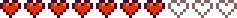
Each heart is 250 friendship points. All heart meters can be viewed on the social tab of the game menu.
When talking to villagers, a circle will appear next to their portrait. Its color will depend on the number of hearts the player has with the villager. Blue denotes 0-1 hearts, green for 2-3, yellow for 4-5, red for 6-7, purple for 8-9, and at 10-14 hearts a purple star will appear. Hovering the mouse over the circle will display the number of hearts out of 10, if not married.
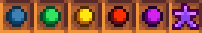
Friendship points can be increased with each villager by:
- talking to them once per day (+20)
- completing an item delivery quest (+150)
- giving a gift they love, like, or are neutral towards (see Gifts)
- giving the maximum two gifts in one week (+10, awarded on the next Sunday)
- inviting them to the Movie Theater (+200 if loved, +100 if liked)
- purchasing a snack for them at the Movie Theater (+50 if loved, +25 if liked) (see Movie Theater)
- making certain choices in heart events
- kissing your spouse (+10, only for the first kiss of the day); does not apply if Krobus is your roommate
Friendship points can be decreased by:
- not giving a daily greeting (see Decay)
- giving a gift they dislike or hate (see Gifts)
- hitting them with a slingshot (-30 per hit)
- making certain choices in heart events
- rummaging through a Garbage Can when they're within 7 tiles of the player (-25, except Linus who increases: +5). They will speak to indicate that they have seen them. If more than one villager is within 7 tiles of the player when they rummage, only one will speak and lose friendship.
If a player has read Friendship 101, all friendship gains are increased by 10%.[1]
For the player's spouse, all friendship gains and losses are reduced by 34%.[1]
The player may enter a villager's bedroom when the relevant heart meter reads at least 2 hearts. This level improves access to the villager for talking and gifting. Once opened, the room is permanently unlocked even if the heart meter goes below 2 hearts.
Friendship points can increase up to a maximum of 2749 (one point less than 11 hearts) for non-marriage candidates.
With marriage candidates, the meter pauses at 8 hearts. It will not increase unless you give the candidate a bouquet to indicate your romantic interest. If you do so, that meter is unlocked and operates as before until ten hearts is reached. (Note that after reaching 8 hearts pre-bouquet, friendship points can continue to rise to just below 9 hearts (2249 points) and will not decay until the candidate is given a bouquet.) It is possible to give a bouquet to any and all marriage candidates, and raise all their friendship levels to 10 hearts, without damage to your relationships with other romantic partners, so long as you have not yet proposed. (If you have proposed, are married, or have a roommate, there is a chance your fiancé/spouse/roommate may become jealous.) Breaking up with them will instantly lower the relationship meter to 5 hearts, but it can be increased back to 8 hearts.
Dating all bachelors or bachelorettes may result in a Group Ten Heart event, which does not affect friendship, but may prevent the player from giving gifts to them for one week afterwards.
After proposing marriage, the heart meters of all other marriage candidates revert to their pre-engagement behavior. However, their entries in the social tab still show whether they have previously been given a bouquet. In addition, after marriage, romantic heart events can still be triggered with other marriage candidates if they have previously been given a bouquet. After the marriage ceremony, the player's spouse's meter unlocks once again and can rise as far as 14 hearts. Friendship points can then increase up to a maximum of 3749 (one point less than 15 hearts).
Decay
Each day, not talking to a villager will slightly decrease their friendship unless their heart meter is full.[2] If the player is married, decay never stops with their spouse even if the player is at 14 hearts with them. Calling a villager using the Telephone does not count as talking to the villager.
| Relationship | Decay rate | When decay stops |
|---|---|---|
| Married | -20/day | Never |
| Gave bouquet | -10/day | 10 hearts |
| Pre-bouquet | -2/day | 8 hearts |
| Not romanceable | -2/day | 10 hearts |
Gifts
You can give each villager one gift per day, up to two gifts per week, as indicated by the checkboxes in the social tab. You can review the villager's gift preferences by clicking on their row in the Social Tab to open the "Gift Log". This log keeps track of gifts given, and gift preferences learned via Secret Notes and dialogues with their family and friends. Any previously-given gifts that are currently in inventory will have a blue backpack icon in the lower right.
For the purpose of gift-giving, the week begins on Sunday. If you give a villager two gifts in a week, their heart meter will rise by an additional 10 friendship points on Sunday morning when you wake up.
You can always give a birthday gift to a villager, even if you've already given them two other gifts that week.
You can give your spouse one gift every day of the week, but any friendship gain or loss is halved.[3]
Each villager has individual likes and dislikes, which affects how many friendship points are gained or lost when you give them a gift. The friendship points are multiplied on their birthday (×8) and Feast of the Winter Star secret gifting event (×5), as well as after reading Friendship 101 (x1.1):
If a gift is liked or loved, the points gained will be further affected by the quality of the item:
| Quality | Multiplier | Effect | |
|---|---|---|---|
| Normal | ×1 | +0% | |
| Silver | ×1.1 | +10% | |
| Gold | ×1.25 | +25% | |
| Iridium | ×1.5 | +50% | |
On any given day, gifting a normal quality loved item always gives more points than gifting an iridium quality liked item to a given villager.[3]
For liked or loved gifts, the equation is Event Multiplier × Preference × Quality Multiplier, where Event Multiplier is 1 (any day), 5 (the player's Winter Star recipient), or 8 (their birthday), Preference is 80 (loved gifts) or 45 (liked gifts), and Quality Multiplier is 1, 1.1, 1.25, or 1.5. (For neutral, disliked, or hated gifts, the equation is simply Event Multiplier × Preference.) The highest friendship points possible from a single gift would be to gift someone an iridium-quality loved gift on their birthday, which would yield 960 points, just short of 4 hearts. If the player has read Friendship 101, the highest friendship points would be (960 * 1.1) 1056 points, just over 4 hearts.
Gift Preference Dialogues
If the player's friendship level with a villager is at least 1 heart, the villager may display a dialogue about a gift that is hated or loved by a family member or friend. Shown below is a collapsable table of all family and friends for whom a villager may show a gift preference dialogue. Villagers not included in the table will never show a gift preference dialogue.
| Villager | May display dialogue for: | |
|---|---|---|
| Family | Non-family | |
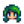 Caroline |
||
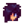 Sebastian |
||
Note that stone may be included in a gift preference dialogue, despite the fact that it is disliked, not hated.
Heart Events
Gaining friendship with each villager will unlock unique events (see each villager's article for the requirements). It's possible to permanently miss some events, though most events can be viewed anytime (with some time restrictions) or out of order. In some heart events, it is not possible to increase or decrease friendship with anyone, even if dialogue choices are available. However, in certain heart events, making certain choices can either increase or decrease friendship with certain villagers involved. The maximum possible friendship points that can be earned in one single heart event is +250 from Linus' 8 heart event, while the maximum possible friendship points that can be lost is -1500 from Penny's 8 heart and 10 heart events.
Romance
- Main article: Marriage
Some villagers can be romanced by the player (see marriage candidates). Once the player has reached eight hearts with an eligible villager, the player can give them a bouquet to unlock the ninth and tenth hearts. Once the player has reached ten hearts with an eligible villager, the player can give them a Mermaid's Pendant to propose marriage, which the villager will always accept unless the player hasn't upgraded the farmhouse to at least Level 2. Alternatively, at 10 hearts, the player can give Krobus a Void Ghost Pendant to indicate they'd like to move in together as roommates, which Krobus will always accept unless the player hasn't upgraded the farmhouse to at least Level 2.
After becoming the player's spouse or roommate, the villager moves into the player's house and their friendship meter expands to fourteen hearts. After reaching 12.5 hearts (3125 points), the villager will give the player a stardrop if the player has not received a stardrop in this manner previously.
Quests
- Main article: Quests
The game-opening Introductions quest, when completed, increases by 100 the player's friendship points with each of the 28 starting townspeople. (The Wizard is not included among these villagers.)
Some Story Quests and Special Order Quests will raise friendship with certain villagers.
Completing an Item Delivery Quest awards 150 friendship points with the requesting villager.
Festivals
- Main article: Festivals
20 friendship points are earned for speaking to villagers at festivals, the same as any non-festival day. Three festivals can have special effects on friendship points with villagers:
- The Flower Dance increases friendship by 250 points (one heart) with the player's dance partner.
- The Luau can increase or decrease friendship points with all villagers except Sandy, the Wizard, Krobus, and the Dwarf. This depends on the ingredient that was added to the soup.
- The player's gift to their secret friend at the Feast of the Winter Star is worth 5x the normal amount of friendship points.
In addition, giving gifts to villagers at the Night Market will increase friendship with them, in the same way as it does outside of festivals.
Bulletin Board Bundles
- Main article: Bundles
Completing all Bulletin Board bundles improves the player's friendship rating with non-datable villagers by two hearts (500 points). Note that this applies only to non-datable villagers whom the player has met in person. Villagers who do not show on the "Social" tab of the player menu and villagers whose names appear as "???" will not receive 500 points.
The player does not have to understand Dwarvish for the Dwarf to receive 500 points. In contrast, they do have to understand Dwarvish for gifts to affect friendship with the Dwarf.
The day after completing the Bulletin Board, the player will receive a letter from Lewis in the mail. The bonus is applied upon opening this letter.
Universal Gifts
- See also: List of All Gifts
Below are lists of items that are universally loved, liked, considered neutral, disliked, or hated. Note that there are some exceptions and that individual villager tastes override any universal tastes.
Preferences for Eggs, Milk, Fruit, and most Foraged Items vary by villager, and are generally not listed here.
Note that Dinosaur Eggs are considered Artifacts and not Eggs for gifting purposes.
Universal Loves
This is a list of items that almost every villager loves to receive as a gift. These items are guaranteed to give the most points (80) towards your relationship, but may be difficult to obtain.
When given a loved gift, villagers usually respond with a heart dialogue bubble.
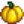
Golden Pumpkin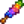
Magic Rock Candy Pearl
Pearl Prismatic Shard
Prismatic Shard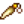
Rabbit's Foot- Stardrop Tea
Note: Stardrop Tea grants 250 friendship points (equal to one full heart) when given to any villager, and is not subjected to the weekly gift limit. If given on a villager's birthday or at the Feast of the Winter Star, it gives 750 points (3 hearts). It does not count for the "Qi's Kindness" Special Order.
Universal Loves exceptions
- Haley hates Prismatic Shard.
- Penny hates Rabbit's Foot.
Universal Likes
Though worth fewer friendship points than a loved gift, a liked gift increases friendship by 45 points (just over half that of a loved gift) and is often much easier to obtain.
- All Artisan Goods (Except for Oil, which is universally disliked; and Void Mayonnaise, which is universally hated, except by Krobus who loves Void Mayonnaise.)
- All Cooking (Except for Fried Egg and Bread, which are universally neutral; and Strange Bun and Seafoam Pudding, which are universally hated.)
- All Flowers (Except for Poppy, which is universally hated, except by Penny who loves Poppies.)
- All Foraged Minerals (Except Quartz, which varies by villager.)
- All Fruit Tree Fruits (Except Banana & Mango, which follow villager-specific preferences for non-Fruit-Tree fruit.)
- All Gems (Except Prismatic Shard, which is universally loved.)
- All Vegetables (including Fiddlehead Fern, but excluding Hops, Tea Leaves, and Wheat, which are universally neutral, and Unmilled Rice, which is universally disliked.)
 Life Elixir
Life Elixir Maple Syrup
Maple Syrup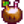
Piña Colada Rainbow Shell
Rainbow Shell Treasure Chest
Treasure Chest
Universal Likes exceptions
Below is an Expandable table of all Universal Likes exceptions, listed by Villager. (See also: List of All Gifts)
Universal Neutrals
This is a list of items that will elicit a neutral response from the villagers, and give 20 points toward friendship. There are some exceptions.
- All Books (Except the Price Catalogue, which is disliked.)
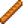
Bread Coral
Coral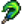
Duck Feather Fried Egg
Fried Egg Hops
Hops
- Mystic Syrup
 Nautilus Shell
Nautilus Shell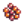
Roe Squid Ink
Squid Ink Sweet Gem Berry
Sweet Gem Berry
 Tea Leaves
Tea Leaves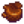
Truffle Wheat
Wheat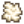
Wool
Universal Neutrals exceptions
- Abigail loves Monster Compendium, likes Combat Quarterly.
- Alex loves Jack Be Nimble, Jack Be Thick, dislikes all other Books.
- Caroline likes Tea Leaves.
- Clint likes Mining Monthly.
- Elliott loves Duck Feather and Squid Ink, likes All Books.
- Emily loves Wool.
- Evelyn likes Coral and Nautilus Shell.
- Gus likes Truffle.
- Haley dislikes Mystic Syrup.
- Harvey likes Duck Feather, dislikes Bread, hates Coral and Nautilus Shell.
- Kent likes Dwarvish Safety Manual.
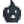
Krobus loves Monster Compendium.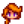
Leah loves Truffle, dislikes Fried Egg, hates Bread.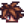
Leo loves Duck Feather, likes Nautilus Shell, hates Hops.- Linus loves The Alleyway Buffet.
- Marnie likes Stardew Valley Almanac.
- Maru hates Truffle.
- Penny loves All Books, dislikes Duck Feather and Wool, hates Hops.
 Pierre loves Price Catalogue.
Pierre loves Price Catalogue. Robin loves Woody's Secret, likes Woodcutter's Weekly.
Robin loves Woody's Secret, likes Woodcutter's Weekly. Sandy likes Wool.
Sandy likes Wool.- Sebastian likes Combat Quarterly and Monster Compendium.
- Willy loves Jewels Of The Sea and The Art O' Crabbing, likes Bait And Bobber.
- Wizard loves Book of Mysteries.
Universal Dislikes
This is a list of items that will decrease friendship by 20 points when given as gifts.
- All Building Materials -- Battery Packs, Clay, Fiber, Hardwood, Moss, Stone, and Wood
- All Artifacts
- All Bombs
- All Crafted Floors & Paths
- All Fences
- All Fertilizer
- All Fish (except for Carp and Snails, which are universally hated)
- All Geode Minerals
- All Geodes
- All Seeds including Fruit Tree Saplings, Tea Saplings, and Tree seeds
- All Sprinklers
- All Tackle
- All Trinkets
- Fireworks -- Red, Green, and Purple
- Misc. Mined/Metal Goods -- Bone Fragment, Cinder Shard, Coal, Copper Bars, Gold Bars, Gold Ore, Iridium Bars, Iridium Ore, Iron Bars, and Refined Quartz
 Cave Carrot
Cave Carrot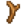
Driftwood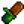
Field Snack Jack-O-Lantern
Jack-O-Lantern Oak Resin
Oak Resin
 Oil
Oil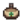
Pine Tar- Price Catalogue
- Qi Fruit
 Rice
Rice
 Solar Essence
Solar Essence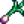
Spring Onion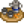
Tea Set Unmilled Rice
Unmilled Rice
 Vinegar
Vinegar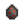
Void Egg- Void Essence
 Wheat Flour
Wheat Flour
Universal Dislikes exceptions
- Abigail loves Pufferfish; likes Ancient Sword, Basilisk Paw, Bone Flute; hates Clay
- Alex likes Dinosaur Egg, Field Snack, Parrot Egg; is neutral toward Frog Egg
- Clint loves Gold Bar, Iridium Bar, Omni Geode; likes Copper Bar, Iron Bar; is neutral toward Coal, Gold Ore, Iridium Ore, Refined Quartz
- Demetrius likes Dinosaur Egg; is neutral toward All Fish (except Carp & Snail)
- Dwarf loves Lava Eel, Lemon Stone, Omni Geode; likes All Artifacts, Cave Carrot; is neutral toward Solar Essence, Void Essence
- Elliott loves Lobster; likes Octopus, Squid; is neutral toward All Other Fish (except Carp & Snail); hates Sea Cucumber, Super Cucumber
- Emily loves Parrot Egg
- Evelyn likes Clam, Cockle, Mussel, Oyster; hates All Other Fish, Clay
- George hates Clay
- Haley hates All Fish, Clay
- Harvey likes Spring Onion
- Jas loves Ancient Doll, Fairy Box, Strange Doll (green), Strange Doll (yellow); hates Clay
- Krobus loves Iridium Bar, Void Egg, Void Mayonnaise; likes Gold Bar
- Leah likes Driftwood, Spring Onion; hates Void Egg
- Leo loves Parrot Egg, is neutral toward All Fish, hates Oil and Unmilled Rice.
- Linus likes Spring Onion; is neutral toward All Fish (except Snail)
- Marnie hates Clay
- Maru loves Battery Pack, Dwarf Gadget, Gold Bar, Iridium Bar; likes Copper Bar, Iron Bar, Oak Resin, Pine Tar
- Pam is neutral toward All Fish (except Carp, Octopus, Snail & Squid); hates Octopus, Squid
- Penny loves Price Catalogue, Sandfish; likes all Artifacts
- Pierre loves Price Catalogue, hates All Fish
- Robin likes Hardwood
- Sam loves Tigerseye; hates All Misc. Mined/Metal Goods
- Sebastian loves Frog Egg, Obsidian, Void Egg; likes Flounder; is neutral toward All Fish (except Flounder, Carp & Snail); hates Clay
- Vincent loves Frog Egg; hates Clay
- Willy loves Catfish, Gold Bar, Iridium Bar, Octopus, Sea Cucumber, Sturgeon; likes Lingcod, Tiger Trout; is neutral toward All Other Fish (except Carp & Snail)
- Wizard loves Solar Essence, Void Essence, Super Cucumber; likes All Geode Minerals, All Trinkets, Iridium Bar
Universal Hates
This is a list of items that will decrease friendship by 40 points when given as gifts.
When given a hated gift, villagers usually respond with a hate dialogue bubble.
- All Bait
- All Fossils
- All Monster Loot (except Solar Essence and Void Essence, which are disliked)
- All Trash (except Driftwood, which is disliked)
- Golden Tag
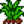
Grass Starter Green Algae
Green Algae- Hay
 Iron Ore
Iron Ore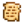
Journal Scrap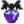
Monster Musk- Muscle Remedy
- Mystery Box
 Oil of Garlic
Oil of Garlic Poppy
Poppy Qi Seasoning
Qi Seasoning- Radioactive Bar
- Radioactive Ore
- Rain Totem
 Red Mushroom
Red Mushroom Sap
Sap
Universal Hates exceptions
- Abigail dislikes Sugar
- Elliott is neutral toward Sea Urchin
- Evelyn likes Broken Glasses and Sea Urchin
- Krobus loves Monster Musk and Void Mayonnaise; likes Seafoam Pudding and Strange Bun
- Leah dislikes Seaweed
- Leo likes Dragon Tooth and Sea Urchin
- Linus is neutral toward Carp and Wild Bait
- Marnie dislikes Seaweed
- Maru loves Radioactive Bar, likes Radioactive Ore
- Pam is neutral toward Joja Cola
- Penny loves Poppy, dislikes Red Mushroom
- Sam likes Joja Cola, dislikes Seaweed
- Shane is neutral toward Strange Bun, dislikes Seaweed
- Vincent loves Snail
- Willy likes Seafoam Pudding
- Wizard dislikes Slime
Achievements
There are 6 Achievements related to Friendship:
- A New Friend (Reach a 5-heart friend level with someone)
- Best Friends (Reach a 10-heart friend level with someone)
- The Beloved Farmer (Reach a 10-heart friend level with 8 people)
- Cliques (Reach a 5-heart friend level with 4 people)
- Networking (Reach a 5-heart friend level with 10 people)
- Popular (Reach a 5-heart friend level with 20 people)
References
History
- 1.07: Decay will now stop if a villager is at max hearts (except when married).
- 1.3.27: The Golden Pumpkin is now a universal love instead of a universal hate. Added new item, the Pearl, as a universal love.
- 1.4: Friendship can now be increased by talking with NPCs at Festivals. Removed glitch where a birthday gift would remove a checkbox on the social tab. Removed bugs where cooking recipes would be sent at the wrong friendship level, and where 10 heart-events were unlockable without a bouquet. Removed the 50% friendship penalty when talking to busy NPCs. Added Gift Logs, accessed by clicking on the villager in the Social tab. Changed jealousy of player's spouse to only apply to marriage candidates who have received a bouquet. Harvey now dislikes many cooked dishes. Willy is neutral towards Maki Roll, Sashimi, and Dish O' The Sea. Vincent loves Snails. Dwarf likes Cave Carrot. Vincent & Jas like Honey and Jelly. Sebastian hates Mead.
- 1.4.4: Mermaid's Pendant and Void Ghost Pendant can no longer be given as gifts at the Feast of the Winter Star. Jas & Vincent now hate Triple Shot Espresso. Dwarf now loves Lemon Stone.
- 1.5: Penny and Dwarf now like all artifacts. Artifacts changed from Universal Hate to Universal Dislike for all other NPCs. Fixed bug where the friendship boost for giving a villager two gifts would not apply if they were given a third gift on their birthday.
- 1.6: Rainbow Shell and Treasure Chest are now universally liked. Added Stardrop Tea, which gives 250 friendship points when given to any villager. Clam is now considered a Fish for gifting, so it is universally disliked. Many individual gift tastes changed. Some items now trigger unique dialogue when gifted to a certain villager. Reading Friendship 101 will permanently increase friendship gain. Friendship gain and loss is reduced by 34% for spouses.